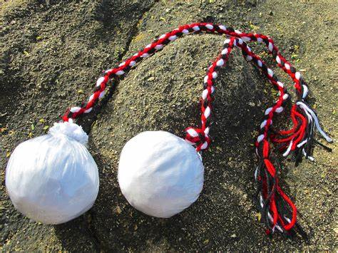

Was sind Poi?

Poi sind ein traditionelles neuseeländisches Performance-Werkzeug, das aus zwei flexiblen Schnüren
besteht, die an beiden Enden mit Gewichten oder Griffen befestigt sind. Diese Gewichte können
verschiedenartig sein, von Stoffbällen bis zu LED-Leuchten oder sogar Feuer.
Die Grundidee beim Poi ist es, die Schnüre durch geschickte Drehungen und
Bewegungen zu schwingen, um beeindruckende visuelle Effekte zu erzeugen. Poi
werden oft in Tanz- und Artistik-Performances eingesetzt. Es erfordert Geschicklichkeit
und Koordination, um die Poi synchron zu bewegen und dabei verschiedene Muster zu erzeugen.
Feuerpoi sind eine spezielle Art von Poi, bei denen die Gewichte oder
Bälle an den Enden der Schnüre mit brennbarem Material umwickelt sind. Dies
ermöglicht faszinierende Feuershows, besonders bei Nacht. Bei der Verwendung von
Feuerpoi ist jedoch äußerste Vorsicht geboten, da es sich um eine potenziell gefährliche
Aktivität handelt. Es erfordert nicht nur Fähigkeiten im Umgang mit Poi, sondern
auch Kenntnisse im sicheren Umgang mit Feuer, einschließlich geeigneter Schutzausrüstung
und angemessener Umgebung. Feuerpoi werden häufig in künstlerischen Darbietungen,
Zirkusvorstellungen und anderen Veranstaltungen eingesetzt, um eine faszinierende
visuelle Wirkung zu erzielen.